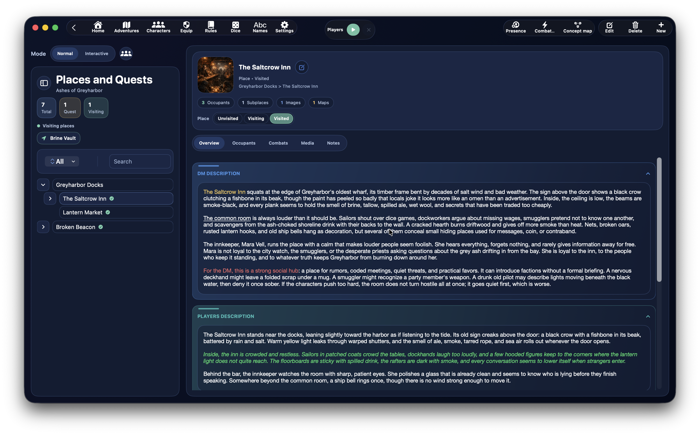
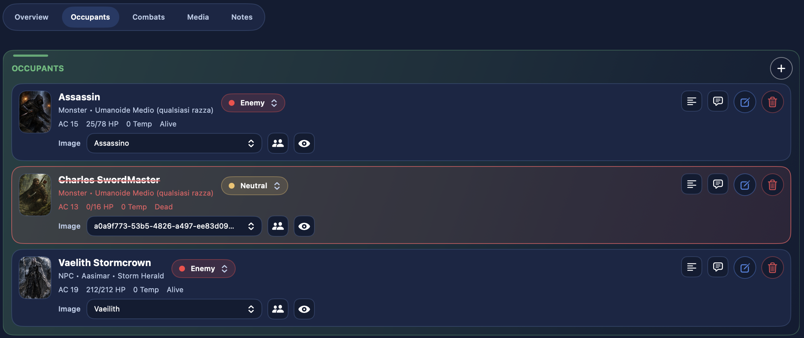
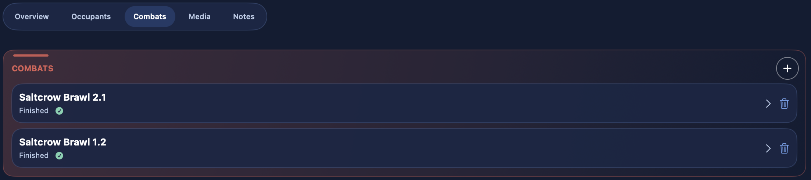
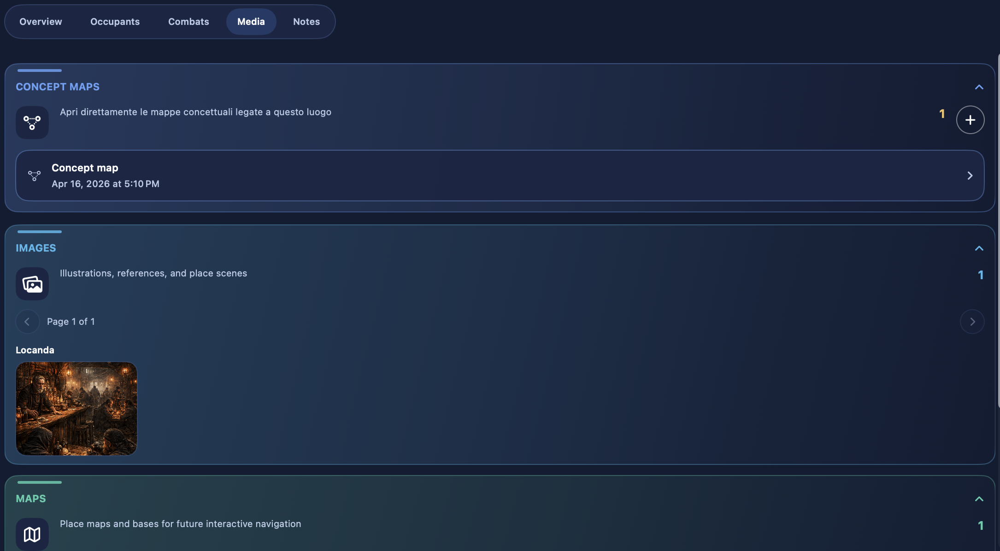
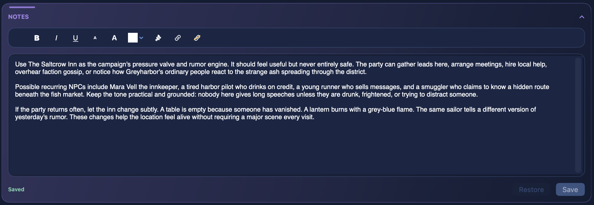

Locais¶
A secção Locais reúne tudo o que está relacionado com os espaços jogáveis de uma aventura: cidades, masmorras, salas, áreas narrativas, missões ligadas, presenças, combates, imagens, mapas e mapas interativos.
É uma das secções mais ricas da aplicação, porque junta:
- estrutura narrativa
- estado de exploração
- conteúdo para mostrar aos jogadores
- presenças contextuais
- acesso rápido a combates
Para que serve a secção Locais¶
O painel de locais serve para organizar a aventura tanto do ponto de vista espacial como narrativo.
Aqui podes:
- criar locais e missões
- construir hierarquias de locais e sublocais
- ligar imagens e mapas
- gerir as presenças num local
- criar e reabrir combates ligados a um local específico
- manter descrições separadas para DM e jogadores
- usar um mapa interativo para te moveres entre locais
Como lá chegar¶
A secção abre a partir do painel da aventura, entrando no cartão Locais e Missões.
A partir desse cartão podes:
- abrir todo o painel de locais
- usar atalhos rápidos para um local recente, quando existirem
- usar atalhos rápidos para um combate recente ligado a um local
Estrutura do ecrã¶
O painel Locais está organizado em torno de dois modos principais:
NormalInterativo
e em torno de duas áreas:
- uma coluna esquerda com árvore, pesquisa, filtros e ações rápidas
- um painel direito com o detalhe do local selecionado
Modo Normal e Interativo¶
Modo Normal¶

É o modo clássico, pensado para trabalhar diretamente sobre:
- a árvore de locais
- o detalhe do local selecionado
- presenças
- combates
- média
- notas
É o modo mais indicado para preparar e editar a aventura.
Modo Interativo¶

O modo Interativo fica disponível quando a aventura tem mapas interativos prontos a usar.
Neste modo, o foco passa para a navegação por mapa:
- a parte esquerda do ecrã mostra o mapa interativo em vez da árvore clássica
- os marcadores podem ser selecionados
- com duplo clique é possível abrir o local ligado no painel direito
- os nomes dos marcadores podem ser mostrados ou ocultados
- estão disponíveis zoom e deslocação do mapa
A partir do painel Média continuas a poder abrir rapidamente o mapa interativo associado a um dos mapas do local, mas no modo Interativo o mapa passa a ser o conteúdo principal da parte esquerda do painel.
A coluna esquerda¶
A coluna esquerda é o painel de navegação desta secção.
Aqui encontras:
- pesquisa
- filtros
- um resumo compacto
- a árvore de locais e missões
Menu contextual sobre locais na árvore¶
No modo em árvore podes clicar com o botão direito sobre um local para abrir um menu contextual com ações rápidas diretamente nesse nó.
As ações disponíveis são:
Adicionar sublocalAdicionar presençaAdicionar ligaçãoRemover ligaçãoCriar mapa conceptualCriar combateEditarEliminar local
Este menu é uma das formas mais rápidas de construir a estrutura da aventura enquanto trabalhas na árvore.
Na prática, permite-te reorganizar a árvore rapidamente sem abrir sempre o formulário completo do local.
Reordenação rápida por arrastar e largar¶
A árvore de locais também suporta um fluxo rápido de arrastar e largar.
Podes:
- mudar a ordem dos locais irmãos
- mover um local para baixo de outro local
- devolver um local à raiz se o arrastares para fora de um ramo pai
Isto torna muito mais rápida a afinação da estrutura narrativa durante a preparação.
Filtros e resumo¶
A barra lateral mostra também um resumo compacto com:
- total de locais
- número de missões
- número de locais em visita
Consoante o modo e o contexto, os filtros podem incluir:
- todos
- locais
- missões
- em visita
- ativas
Criar um local ou uma missão¶
Para criar um novo registo, usa o botão de criação no painel de locais.
O formulário está dividido em três grupos principais:
Informação principalDescriçõesRecursos do local
Informação principal do local¶
No formulário podes preencher:
Nome- local pai ou ligações a locais pai
TipoMarcador- estado do local ou estado da missão
Tipo: Local ou Missão¶
O campo Tipo permite escolher se o registo é um:
LocalMissão
Se o registo for um Local, usa o estado de visita:
- não visitado
- em visita
- visitado
Se o registo for uma Missão, usa antes o estado de progressão:
- inativa
- indisponível
- ativa
- concluída
Locais pai e hierarquia¶
O formulário dos locais suporta uma hierarquia avançada.
Podes selecionar um ou mais locais pai, e o DnDino guarda essa ligação como uma estrutura hierárquica real.
Isto significa que um local pode:
- estar na raiz da aventura
- existir como sublocal de outro local
- estar ligado em mais do que um ponto da estrutura, quando fizer sentido
Isto é útil, por exemplo, quando queres:
- colocar um grupo inteiro de locais debaixo de uma missão
- mostrar o mesmo local em mais do que um ramo da árvore
- criar caminhos narrativos diferentes sem duplicar o registo
Nestes casos, o local não é duplicado: a árvore apenas ganha uma ligação adicional ao mesmo local.
Quando removes uma ligação:
- o local não é eliminado
- se tiver vários pais, apenas a ligação adicional é removida
- se perder o seu único pai, volta para a raiz da árvore
O formulário continua a impedir ciclos, excluindo automaticamente o próprio local e a sua subárvore da lista de possíveis pais.
Marcadores do local¶
Cada local pode ter um ou mais marcadores especiais, visíveis também no painel.
Os marcadores disponíveis incluem:
- perigoso
- importante
- secreto
- bloqueado
Servem como destaques visuais rápidos para leres a aventura de imediato.
Descrições do local¶
A secção Descrições do formulário está dividida em vários campos de texto formatado:
Descrição DMDescrição jogadoresPistasTesourosNotas
Esta separação é muito útil, porque te permite distinguir:
- o que o DM deve saber
- o que os jogadores podem ver ou descobrir
- informação de apoio como pistas e tesouros
Ligações internas nos textos do local¶
O sistema de ligações internas também é muito útil em Locais.
Aqui não serve tanto para automatizar ataques, mas sobretudo para tornar o texto do local navegável e mais rápido de usar à mesa.
Dentro dos campos de texto formatado de um local, podes inserir ligações para:
PersonagemLocalFeitiçoTalentoRegra- e, quando fizer sentido, também ligações de lançamento
Porque são úteis nos locais¶
As descrições dos locais contêm frequentemente muitas referências:
- personagens presentes ou mencionadas
- locais ligados
- objetos ou feitiços mencionados no texto
- regras especiais da cena
Transformar essas referências em ligações internas permite-te:
- abrir imediatamente a ficha de uma personagem mencionada
- saltar diretamente para outro local da aventura
- consultar um feitiço ou uma regra sem sair do contexto
- escrever descrições mais densas mas ainda fáceis de navegar
Exemplos práticos¶
Podes ligar uma personagem mencionada no local, como capitão Arven, ou outro local citado no texto, como Cripta Submersa.
Assim, a descrição deixa de ser apenas narrativa: passa também a ser um atalho de navegação.
Onde funcionam melhor¶
As melhores partes da ficha de local para usar ligações internas são:
Descrição DMDescrição jogadoresPistasNotas
Pesquisa inicial do seletor¶
Quando carregas em Ligação, o seletor tenta usar o texto selecionado como filtro inicial.
Se encontrar uma correspondência real no nome de um registo:
- abre já filtrado
Se não encontrar resultados reais:
- limpa o filtro inicial
- e mostra a lista completa
Recursos do local¶
Cada local pode ter os seus próprios recursos, divididos em:
- imagens
- mapas
No formulário podes:
- adicionar imagens
- adicionar mapas
- escolher a capa do local
- remover a capa
Para cada recurso podes configurar:
- nome apresentado
- visibilidade para
Jogadores - visibilidade para
DM - texto de apresentação
Área hero do local¶
Quando selecionas um local, o painel direito mostra uma área hero com:
- a capa do local
- nome
- tipo (
LocalouMissão) - estado atual
- eventuais marcadores
- a cadeia hierárquica do local
Também aparece um resumo rápido com:
PresençasSublocaisImagensMapas
Separadores de detalhe¶
O painel direito usa uma barra de foco com cinco secções principais:
PanorâmicaPresençasCombatesMédiaNotas
Panorâmica¶
O separador Panorâmica reúne:
- descrição DM
- descrição jogadores
- pistas
- tesouros
- mapas conceptuais ligados ao local
Presenças¶

O separador Presenças reúne as personagens presentes no local.
A partir daqui podes:
- ver todas as presenças do local
- adicionar uma nova presença
- abrir o detalhe contextual dessa presença
- mudar o seu papel no local
- ler ou editar
Notas DM - remover a presença
Combates¶

O separador Combates mostra todos os confrontos ligados ao local.
A partir daqui podes:
- criar um novo combate para o local
- reabrir um combate existente
- ver se ainda não começou, está em pausa ou terminou
- eliminar um combate
Média¶

O separador Média reúne:
- imagens do local
- mapas do local
- mapas herdados de locais pai, quando ativados
A partir daqui podes:
- percorrer imagens
- percorrer mapas
- mostrá-los aos jogadores
- mostrá-los ao DM
- abrir diretamente um mapa interativo
Notas¶

O separador Notas é dedicado às notas rápidas do DM para o local.
Presenças do local¶
As presenças do local são geridas de forma contextual e separada dos personagens de aventura e dos participantes em combate.
Isto permite-te manter:
- nomes apresentados contextuais
- papel no local
- notas DM locais
- estado local, quando necessário
Duas origens possíveis para uma presença¶
Quando adicionas uma presença a um local, o formulário pede a Origem.
As fontes possíveis são:
Personagem de aventuraFicha base
Personagem de aventura¶
Esta origem usa uma personagem já ligada à aventura.
Neste caso, a presença mantém o estado contextual da campanha.
Ficha base¶
Esta origem clona um registo base do tipo:
PNJMonstro
Os registos do tipo Herói não são selecionáveis neste modo.
Regras de unicidade das presenças¶
No painel de locais, o DnDino aplica regras muito concretas:
- um
Personagem de aventurasó pode ser colocado uma vez no mesmo local - um
PNJbase só pode ser adicionado uma vez no mesmo local - um
Monstrobase pode ser adicionado várias vezes no mesmo local
Quando adicionas várias instâncias do mesmo monstro, o nome apresentado é numerado automaticamente, por exemplo:
GoblinGoblin 2Goblin 3
Dados da presença no local¶
No formulário da presença podes definir:
Papel no encontroNome apresentadoCondiçõesNotas DM
Se a presença vier de uma ficha base (PNJ ou Monstro), também tens um estado local do local, como:
- PV temporários
- PV atuais
- estado
Se a presença vier de um Personagem de aventura, o local continua a referenciar esse estado contextual da campanha, em vez de o duplicar localmente da mesma forma.
Papel no local¶
Cada presença tem um papel contextual:
- aliado
- neutro
- inimigo
Este papel é importante tanto para ler a cena como para fluxos posteriores, como os combates.
Combates ligados ao local¶
Os combates dentro dos locais são criados diretamente a partir do local selecionado.
Quando crias um novo combate:
- o combate é guardado como encontro desse local
- aparece imediatamente no separador
Combates - pode ser reaberto mais tarde
Média do local¶
A área de média do local distingue claramente entre:
- imagens
- mapas
O painel também pode mostrar mapas herdados de locais pai através do seletor:
Mostrar mapas dos locais pai
Mapa interativo¶
Quando um mapa é escolhido como mapa interativo do local, podes abri-lo diretamente a partir do painel.
O mapa interativo suporta:
- zoom
- deslocação
- marcadores
- navegação entre locais
Marcadores do mapa interativo¶
Cada marcador pode ter:
- uma posição no mapa
- um título
- um local de destino associado
Os marcadores podem ser:
- criados
- movidos
- renomeados
- associados a um local
- eliminados
Comportamento base:
- clique simples: selecionar o marcador
- duplo clique: abrir o local ligado no painel direito
Relação entre Locais, Mapas e Mapas interativos¶
Convém pensar nestes três elementos como camadas diferentes:
- o local é o contentor narrativo e estrutural
- o mapa é um recurso visual ligado ao local
- o mapa interativo é um mapa escolhido como suporte navegável, enriquecido com marcadores
Missões na secção Locais¶
As missões vivem na mesma secção que os locais, mas seguem um comportamento próprio.
Uma missão:
- aparece na árvore ao lado dos locais
- usa um estado de progressão em vez de um estado de visita
- pode ainda assim ter descrições, notas, imagens, mapas, presenças e ligações contextuais
Quando usar a secção Locais¶
O painel Locais é o sítio certo quando queres:
- construir a geografia da campanha
- definir sublocais e ligações
- preparar missões e o respetivo estado
- colocar presenças no mundo